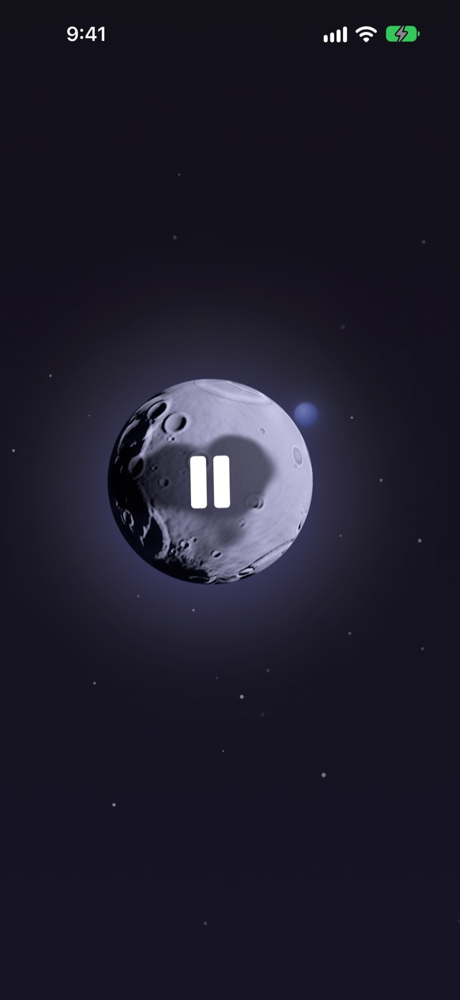
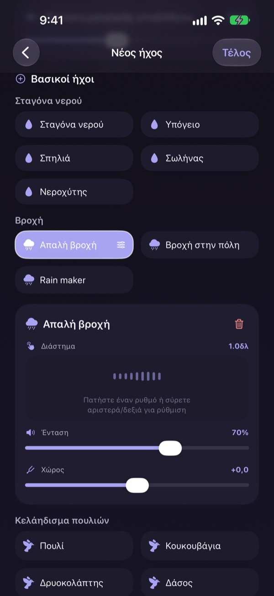
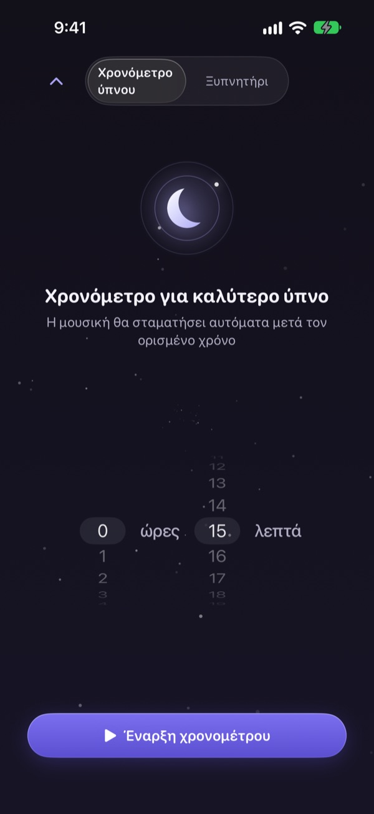
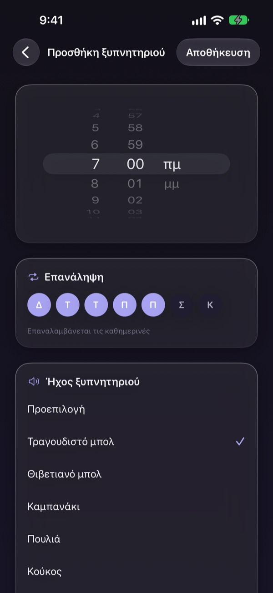
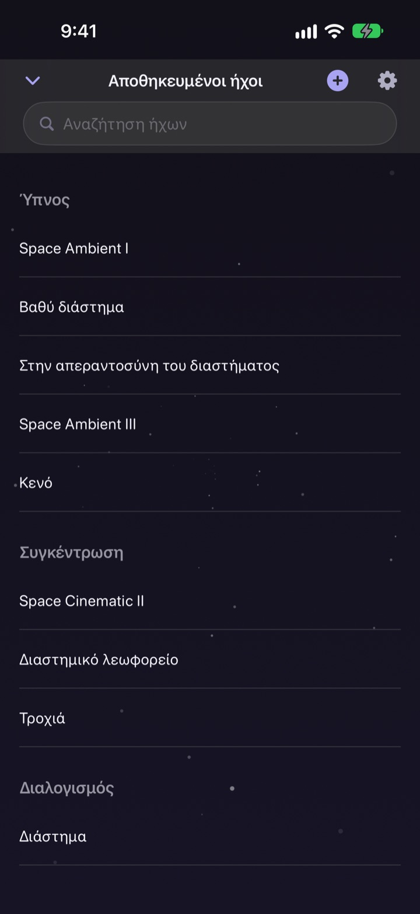

Μη χάνεις τη νύχτα
ψάχνοντας τον σωστό ήχο
Φτιάξε μία φορά τον δικό σου ήχο με βροχή, σταγόνες νερού και θιβετιανό μπολ. Από την επόμενη νύχτα αρκεί ένα πάτημα στο φεγγάρι.
Όλοι οι ήχοι ακούγονται δωρεάν. Για iPhone και iPad.

Έχεις χάσει ποτέ μια ώρα ψάχνοντας κάτι για να κοιμηθείς;
Η βροχή είναι πολύ μονότονη, τα κύματα πολύ δυνατά και το βίντεο σταματά για διαφήμιση μέσα στη νύχτα. Με το Dalbit βάζεις μόνος σου σε στρώσεις τους ήχους που σου αρέσουν μέχρι να ταιριάξουν ακριβώς σε σένα, και τους κρατάς πίσω από ένα μόνο φεγγάρι.
Χτίσε τον ήχο σου σε στρώσεις
Στοίβαξε βροχή, σταγόνες νερού, κελαηδίσματα και θιβετιανά μπολ. Ρύθμισε σε κάθε στρώση την ένταση, πόσο συχνά ακούγεται και από πού, και πρόσθεσε κύματα ή πιάνο ως μουσική υποβάθρου.
Δώσε όνομα στη μίξη, αποθήκευσέ την και γύρνα σε αυτήν όποια νύχτα θέλεις.

Σβήνει χωρίς να σε ξυπνήσει
Ο χρονοδιακόπτης ύπνου δεν κόβει ποτέ απότομα τον ήχο. Τον χαμηλώνει σιγά σιγά, ώστε το τέλος να μη σε ξυπνήσει.
Ο ήχος συνεχίζει με σβηστή οθόνη ή σε άλλη εφαρμογή, κι αν δεν αγγίξεις τίποτα, η οθόνη σκοτεινιάζει μόνη της.

Το πρωί σε ξυπνά απαλά
Βάλε ξυπνητήρια με ήχο από τραγουδιστό μπολ, θιβετιανό μπολ, πουλιά ή κούκο και επανάλαβέ τα τις μέρες που διαλέγεις.

Ένα φεγγάρι για όλα
Πάτα το φεγγάρι για αναπαραγωγή και ξανά για παύση. Σύρε στο πλάι για άλλον ήχο, πάνω για τον χρονοδιακόπτη ύπνου, κάτω για τους αποθηκευμένους ήχους.
Όταν ένας ήχος σού κάθεται καλά, κράτα πατημένο το φεγγάρι για να τον βάλεις στα αγαπημένα.

Ξεκινάς σε τρία βήματα
- 1
Πάτα το φεγγάρι
Άνοιξε την εφαρμογή, πάτα το φεγγάρι και ο ήχος ξεκινά αμέσως.
- 2
Σύρε στο πλάι
Συνέχισε μέχρι να βρεις έναν ήχο που σου αρέσει.
- 3
Βάλε χρονοδιακόπτη και ξάπλωσε
Σύρε πάνω, διάλεξε χρόνο και μετά ο ήχος σβήνει σιγά σιγά.
Τι κάνει το φεγγάρι
- Πάτημα
- αναπαραγωγή, παύση
- Σύρσιμο στο πλάι
- επόμενος ήχος
- Σύρσιμο πάνω
- χρονοδιακόπτης ύπνου και ξυπνητήρια
- Σύρσιμο κάτω
- αποθηκευμένοι ήχοι
- Παρατεταμένο πάτημα
- προσθήκη στα αγαπημένα
Μπορείς επίσης να κάνεις παύση και συνέχεια από τα χειριστήρια αναπαραγωγής στην οθόνη κλειδώματος.
Η ακρόαση είναι δωρεάν. Το Premium είναι για να φτιάχνεις περισσότερα.
Δωρεάν
- Όλοι οι ήχοι
- Στρώσεις ήχων για δική σου μίξη
- Έως τρεις αποθηκευμένες μίξεις
- Χρονοδιακόπτης ύπνου που σβήνει σταδιακά
- Ξυπνητήρια με απαλούς ήχους
- Αγαπημένα
Dalbit Premium
- Φτιάξε και αποθήκευσε όσες μίξεις θέλεις
Μηνιαία συνδρομή με αυτόματη ανανέωση και δωρεάν δοκιμή
Η συνδρομή ανανεώνεται αυτόματα, εκτός αν ακυρωθεί τουλάχιστον 24 ώρες πριν από το τέλος της τρέχουσας περιόδου, και η χρέωση ξεκινά μετά τη δωρεάν δοκιμή. Ισχύουν οι τυπικοί όροι χρήσης της Apple (EULA).
Συχνές ερωτήσεις
Πώς παίζω και αλλάζω ήχους;
Πάτα το φεγγάρι στην αρχική οθόνη για αναπαραγωγή και ξανά για διακοπή. Σύρε στο πλάι για άλλον ήχο, πάνω για τον χρονοδιακόπτη ύπνου και κάτω για τη βιβλιοθήκη σου.
Σταματά ο ήχος όταν σβήσει η οθόνη;
Όχι. Συνεχίζει με σβηστή οθόνη ή σε άλλη εφαρμογή. Για να τον σταματήσεις, πάτα ξανά το φεγγάρι ή χρησιμοποίησε τα χειριστήρια της οθόνης κλειδώματος.
Τι γίνεται όταν τελειώσει ο χρονοδιακόπτης;
Ο ήχος δεν κόβεται απότομα. Χαμηλώνει σιγά σιγά και μετά σταματά, για να μη σε ξυπνήσει.
Το ξυπνητήρι δεν χτυπά.
Όταν φτιάχνεις το πρώτο ξυπνητήρι, η εφαρμογή ζητά άδεια. Έλεγξε ότι είναι ενεργή στις Ρυθμίσεις > Dalbit.
Πού αποθηκεύονται οι μίξεις μου;
Οι μίξεις, τα ξυπνητήρια και οι ρυθμίσεις μένουν μόνο σε αυτή τη συσκευή. Αν διαγράψεις την εφαρμογή, διαγράφονται κι αυτά.
Τι μπορώ να χρησιμοποιώ δωρεάν;
Όλους τους ήχους, τις στρώσεις και έως τρεις δικές σου μίξεις. Ο χρονοδιακόπτης ύπνου και τα ξυπνητήρια είναι επίσης δωρεάν. Το Premium αφαιρεί το όριο στις μίξεις.
Πώς ακυρώνω τη συνδρομή;
Πήγαινε στις Ρυθμίσεις > Λογαριασμός Apple > Συνδρομές, διάλεξε το Dalbit και ακύρωσε. Αν δεν ακυρώσεις τουλάχιστον 24 ώρες πριν από το τέλος της τρέχουσας περιόδου, ανανεώνεται αυτόματα.
Άλλαξα κινητό και χάθηκε η συνδρομή.
Συνδέσου με τον ίδιο λογαριασμό Apple, άνοιξε την οθόνη συνδρομής στο Dalbit και πάτα Επαναφορά αγορών.
Πώς αναφέρω ένα σφάλμα ή προτείνω μια λειτουργία;
Στείλε σχόλια από τις ρυθμίσεις της εφαρμογής ή γράψε μας στη διεύθυνση παρακάτω. Συνήθως απαντάμε μέσα σε λίγες μέρες.
Ερωτήσεις ή ιδέες; Γράψε στο mizzking75@gmail.com.